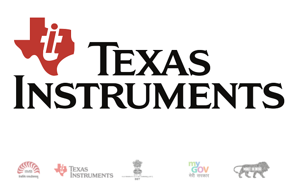
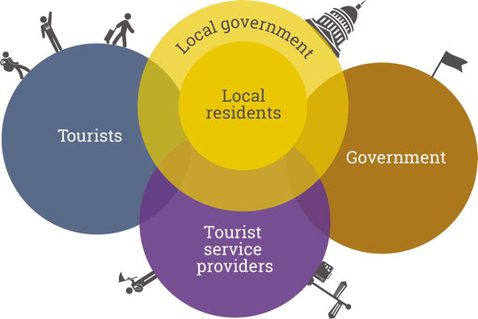

Recent Research
-
Pan India
TERI (The Energy & Resources Institute) and TERI University had organized a pan-India Inter-University Competition on Water Resources Management. This innovative and competitive project was designed to check students' level of awareness and personal comprehension about water bodies close to their places of residence/study. The competition would thus allow students all over India to develop a multi-stakeholder understanding of the need for Integrated Water Resources Management (IWRM) through direct action and would make the TERI expertise and resources, opportunities for internships, research and networking and specialized mentoring by German experts available to all the participants.
-

Texas Instrument's Innovation Challenge 2015
Students of Electronics and Communication Engineering from the academic year 2011-2014 of GEHU had participated in the Texas Instrument's Innovation Challenge 2015 aimed at promoting IC-based system design among student community. 2 teams of GEHU have qualified for the quarter final round of the same. The first team comprising of Akanksha Gulati, Apurva Garg and Naina Agarwal have made a project on "Smart Crop Monitoring based on soil nutrients". The second team, comprising of Ishan Sharma, Rajni Bhatt, Himani Joshi and Sumit Kukreti, have designed a project on "Loco Gatling Gunner Assembly". Both these teams worked under the direct supervision of Mr. Rahul Chauhan, a faculty in the department of Electronics and Communication Engineering.
> -

Project on “Intelligent System for Tourism Industry”
Under the Young Scientist and Professional (SYSP) scheme of Department of Science and Technology (DST), Government of India in November 2011